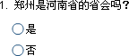

| 判断题 |
|
判断题也称为是-非(true-false)题，测试者只能从两个答案项中选一个。 您要建立一个判断题，请按如下方法： Ø 题目 您可以在这里设定题的题目，它不可以为空。 Ø 答案 判断题有两个答案项，默认值为“是”和“否”，您可以自定义它们的值。 您可以在其前点击以标记出正确答案，其会以一个绿色的“√”来标记；若某个答案项为空，则它不能够被标记。 Ø 其它设置 图片：您可以给当前试题添加一个图片，它将显示在试题的右侧；也可以去除一个已添加的图片。 声音：此功能仅当参数设置中设置[试题窗体可以设置试题声音]才能使用。您可以为当前试题设定一个声音文件，且可以设置是否为自动播放。若设置为自动播放，则在做到此题时声音自动被播放 指定的次数，反之会显示一个声音播放工具体，测试者可以自已控制播放。 分数：您可以设定当前题的分数，其默认值在参数设置中的[默认值设置]里设定。 尝试次数：此设置会在试题属性->试题设置的[答案提交模式]为[一次提交一题]且本次做错的情况下，可以重新做题的次数。 难度级别：标记此题的难度级别。 反馈信息：此设置会在试题属性->试题设置的[答案提交模式]为[一次提交一题]时，每提交一题，若当前题做对，则显示设定的正确信息，反之则显示错误信息。其与以上几项一样，都在参数设置中的[默认值设置]里设定。 与判断题对应的试题效果，如下图所示：  |